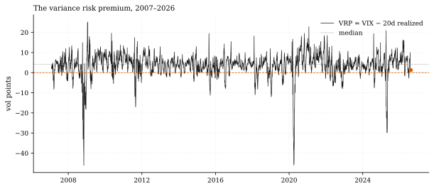
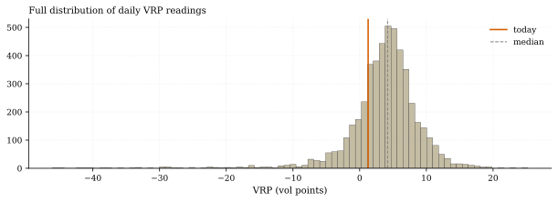
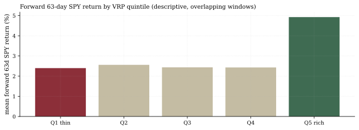

The one-paragraph version. The variance risk premium — VIX minus trailing 20-day realized S&P vol — stands at 1.27 vol points (Aug 14), against a median of 4.18 since 2007. That is the 23rd percentile: the insurance market is cheap, and the carry from selling it is thin. But before anyone reads "thin VRP" as a warning light: across 969 overlapping forward windows, SPY's forward 63-day return after bottom-quintile VRP days averaged +2.40% versus +2.95% on all days — a descriptive non-event, not a doom signal. Thin VRP is a pay-cut for vol sellers, not a prophecy.
How we worked this problem
The vol desk's question is economics, not direction: what does the calm pay? We compute the VRP daily as VIX (implied, 30-day) minus annualized 20-day realized SPY vol from our own panel, then locate today in the full 2007–2026 distribution, and check — descriptively — what followed similar regimes. Nothing here is a forecast.
The data audit
| # | Source | Coverage | As-of | Notes |
|---|---|---|---|---|
| 1 | 16-ETF daily panel (SPY realized vol) | 4,935 sessions, 2007-01-03 → | 2026-08-14 | RV20 from close-to-close returns |
| 2 | FRED vol cache (VIXCLS) | 9,251 obs, 1990-01-02 → | 2026-08-13 | Long history for context |
| 3 | Library net stream vix_vrp_zgate | 4,934 sessions, 2007 → | 2026-08-14 | Certified vol-carry implementation, net T1 |
The exhibits
Where the premium stands. VRP = 1.27 vol points (22.6th percentile since 2007). The median day paid 4.18; the mean 3.61. The premium has been negative — realized above implied — on 15.7% of days; the all-time extreme prints are −46.1 (Nov 4, 2008) and +25.2 (Jan 20, 2009). One nuance the snapshot view misses: 2026's average VRP is 5.58, a rich year — the current 1.27 is thin against the year's own standard, not just history's.


Term structure agrees. The VIX/VXV ratio sits at 0.786, its 3rd percentile since 2007, below 1.0 on 62 of the last 90 sessions — deep contango, the roll-down that vol-carry ETPs harvest.
What follows thin VRP (descriptive). Bottom-quintile VRP days (≤ 0.79 points; 983 days) were followed by a mean forward 63-day SPY return of +2.40% (median +4.30%), with 29.9% of windows negative — versus +2.95% mean and 26.5% negative on all days. Overlapping windows, full-sample quintiles, no multiple-testing control: a descriptive comparison, not a tradable edge.

The certified implementation agrees with the arithmetic. Our library's z-gated VRP member — net of T1 frictions, 2007–2026 — runs a full-sample Sharpe of 0.94, and in 2026 it is up +3.90% at 10.2% annualized vol with a worst day of −2.43%. Carry exists; today it is being paid at a discount.
So what — opportunities
- Vol carry still works, smaller. The z-gate member's 2026 run shows the strategy is functional in a thin-premium year — position size, not existence, is the question.
- Cheap convexity for the other side. The same 23rd-percentile premium that starves sellers makes options cheap for buyers; hedging tails here is historically inexpensive.
So what — risks
- The pay-cut risk. Median carry 4.18 points vs today's 1.27: the vol-selling sleeve of any book is running at roughly a third of its usual revenue.
- Mean-reversion asymmetry. External commentary (Cboe's product page, Aug 18: VIX spot $15.67, heaviest activity in 20-strike upside calls — a different snapshot date than our Aug 14 cache) notes short-vol positioning remains crowded. When the premium normalizes, it usually does so through the VIX leg — violently.
Machinery
All numbers: analysis.py → assets/numbers.json (figures inline), regenerated from house data in a single run before publication.
Limitations
Close-to-close RV understates intraday realized vol (range-based estimators would read higher, thinning the VRP further); VIX is a 30-day interpolation while RV20 is a 20-day trailing window (maturity mismatch disclosed); forward-return buckets overlap; panel as-of Aug 14, FRED as-of Aug 13.
Sources — external reading list
| Claim | Source |
|---|---|
| VIX spot $15.67 (Aug 18), active 20-strike calls | Cboe VIX products page |
Internal sources: the three lineage rows above. Not investment advice.
VIX−RV20 premium; vix_term operand; library stream vix_vrp_zgate (net T1)